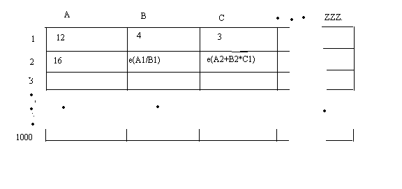
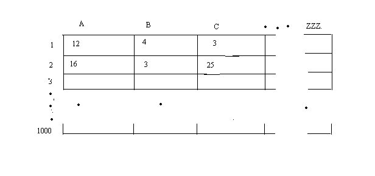

Problem F : Excel Evaluation
Time Limit : 1 second
Spreadsheet applications are becoming more popular now a days. You are given the module of evaluation in the ongoing project.

The spreadsheet looks as shown in figure above. The rows are numbered from 1 to 1000 and columns are represented as A, B, .... Z, AA, AB, ... .. AAA …, up to ZZZ. Each cell is denoted as A1, A2.. B1, B2... Etc.
Max Row size = 1000
max coloumn size = A to ZZZ
Your job is to evaluate the cell that contains expression.
The cells may contain either a numeric constant or an expression that begin with ‘e’.
The expression is an ordinary arithmetic expression with cell references (A1, B1 etc) as operands. All operations are integer arithmetic.
You can safely assume that there are no cyclic dependencies.

Input :
The first line consists of number of test cases T. Each test case begins with row and column size of the spreadsheet (m x n). It is followed by the content of spreadsheet given in row major order.
Output :
For each test case, print the evaluated spreadsheet.
Print a blank line between the outputs of two test cases.
Sample Input :
1
2 3
12 4 3
16 e(A1/B1) e(A2+B2*C1)
Sample Output :
12 4 3
16 3 25
Problem Setter : Raghavan M,
Written for CarteBlanche '08